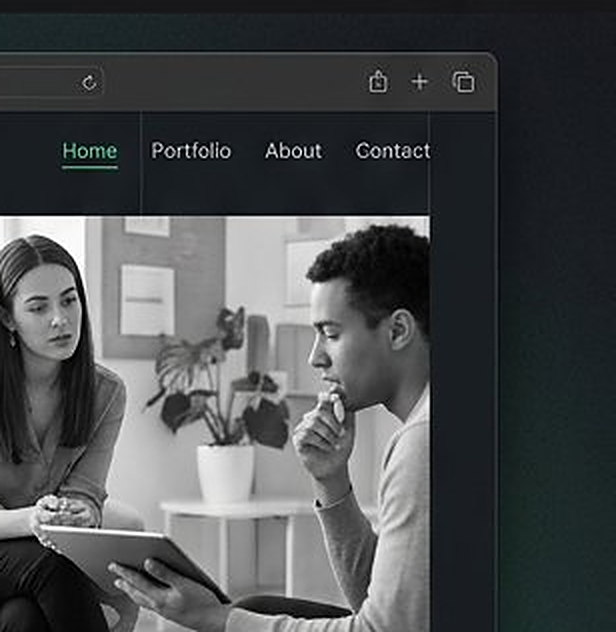

Alex Chen · UX Researcher
Research-led interfaces — interviews, tests and evidence before pixels. Conversion is a consequence, not a goal.

Featured Case Studies
Method
Interviews, diary studies and support mining.
Usability tests with real, paid participants.
Handoff specs developers actually enjoy.